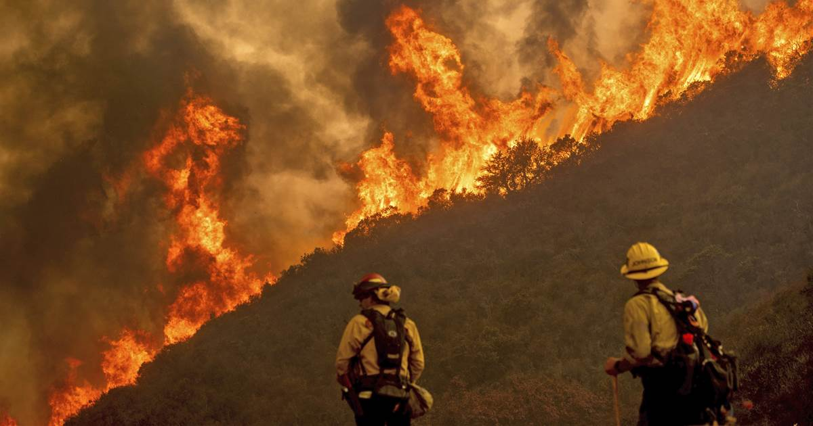
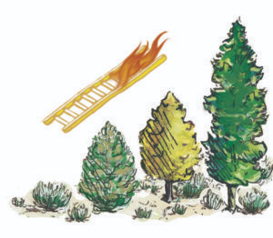

Understanding California’s devastating wildfires
Emily Richter. 9/4/2020

Firefighters fight the River Fire in Salinas, California. (NBC News)
Firefighters fight the River Fire in Salinas, California. (NBC News)
Destructive wildfires burn through California annually. Every year in the late summer, stories of Californian communities being reduced to ash start showing up on the covers of worldwide newspapers. But why are these fires so devastating? Here are three reasons.
Reason #1: California’s climate
Anyone who lives in California will remember how the rainstorms of the last three winters have been so severe they caused mudslides. How can wildfires start if the ground absorbs so much moisture in the winter? Scientists of the American Meteorologist Society say that the answer is simple: more rain means more vegetation growth. Water that falls in the winter encourages plants to grow, and these plants dry out over the summer. Over the last decade, California has experienced summers that are longer, hotter and drier than usual. Researchers at the University of Wisconsin-Madison warn that this combination of wet, vegetation-friendly winters and long, hot, dry summers creates plenty of dry vegetation for massive wildfires to thrive off of.
Reason #2: Fuel ladders

This is a graphic of a fuel ladder. (Living With Fire)
This is a graphic of a fuel ladder. (Living With Fire)
The land of California is designed to survive frequent fires. A large portion of California is composed of ecosystems that depend on fire to encourage the health of their vegetation. In fact, some Californian plants, called fire-induced sprouts, cannot even begin to grow until they have been burned. However, the presence of people has reduced the amount of natural fire activity in California’s fire-dependent ecosystems. As soon as a fire starts, people understandably feel threatened and elect to fight the fire. While well-meaning, this strategy of consistently suppressing fire leads to fuel ladders. When sweeping through an area, a fire feeds primarily on the dead plant matter and excessive ground foliage found on the ground. In a healthy fire-reliant ecosystem, the fire would stay low to the ground and mostly feed off of this fuel. Every so often, it would randomly remove some larger types of vegetation, clearing up space in the ecosystem. However, after decades of fire suppression, crowded ecosystem floors are teeming with saplings and other types of vulnerable vegetation. The fire jumps to these and then to larger and taller trees; this expands the size of the fire, and it also can kill trees that would otherwise be unharmed by wildfire. While ground fires are crucial to much of California’s land, fires that climb fuel ladders lead to uncontrollable fires and devastated ecosystems.
Reason #3: People living in fire-prone areas
The number of people on the planet grows every day. As the population increases, the need for housing also increases; as the need for housing increases, houses are starting to be built in areas prone to wildfire. A study from the University of California, Riverside notes that when urban areas and the wilderness meet, the risk of wildfire is higher and the possibility of devastation is greater. Firefighters suppress any fires starting in urban areas, creating severe fuel ladders that have the potential to start fast-moving fires just outside neighborhoods. As more and more Californians move onto land naturally meant to burn, the chance of another community being devastated by fire increases.
The countless tragic wildfires of the last five years have brought attention to the issue of fire prevention. Thanks to new research and new policies, there is hope that someday soon, devastating fires will no longer be the norm in California.
Cover Photo: (NBC News)

Emily is a junior from Maria Carrillo High School in Sonoma County. She loves chemistry and the environmental sciences and plans to be an environmental chemist when she gets older. Through InterSTEM, she hopes to combine her experience in writing with her interest in STEM in order to help others enjoy and understand STEM. In her free time, she likes playing the flute, and baking and cooking.